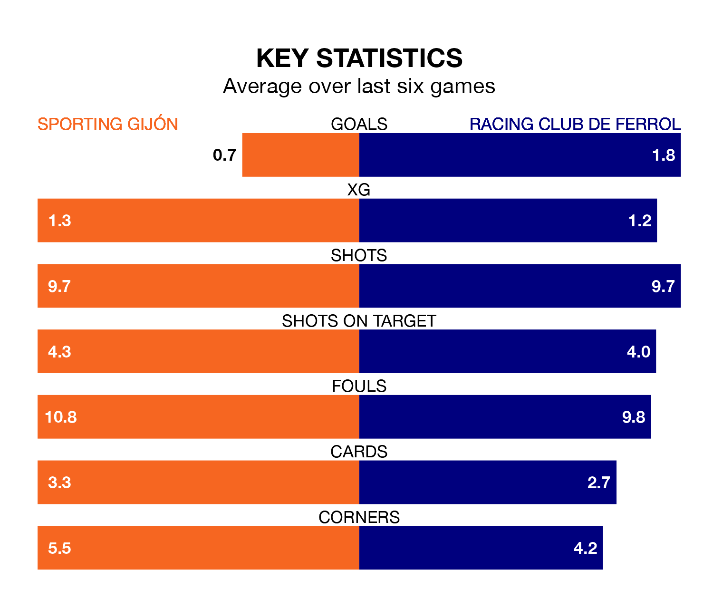

Sporting Gijón face Racing Club de Ferrol on Sunday seeking to protect their long unbeaten run in the Segunda División.
Sporting are unbeaten in five, with one win and four draws, ahead of the 8pm kick-off.
They face a Racing team who have won two and drawn one over the same number of games.
Sporting are second in the table after 23 games, of which they have won 10 and drawn nine, earning 39 points.
Racing are three places behind the hosts in fifth, with 10 wins and eight draws putting them on 38 points.
In Orlando Rubén Yáñez Alabart, Sporting can rely on one of the league's safest pair of hands. He has kept 11 clean sheets in his 23 appearances this season, and no 'keeper has prevented the opposition scoring more often in the Segunda División.
In Ferrol's net, Ander Cantero Armendáriz has seven clean sheets in 23 games. He has conceded a goal every 94 minutes, 30% more often than the 122 minutes between goals for Yáñez Alabart.
With 30 goals in 23 games so far this season, the away team are scoring more than average in the league with 1.3 goals per game. And they are conceding fewer than average, letting in 26 goals at a rate of 1.1 per game.
Sporting are also above average scorers, with 1.3 goals per game, compared to a league average of 1.2. They have conceded 0.7 goals per game.
Sporting's last match was on January 20, a 2-1 win against CD Tenerife, with Daniel Queipo Menéndez and Gaspar Campos Ansó Fernández getting the goals for Sporting.
Racing lost 3-1 against Real Oviedo last time out, also on January 20, with Iker Losada Aragunde on the scoresheet.
Updated: 08:51 (UTC), 25/01/24